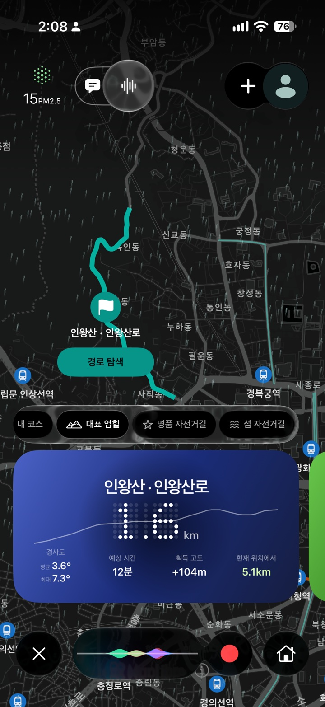
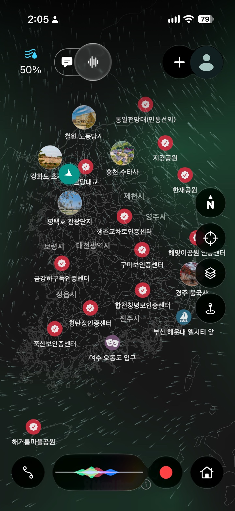
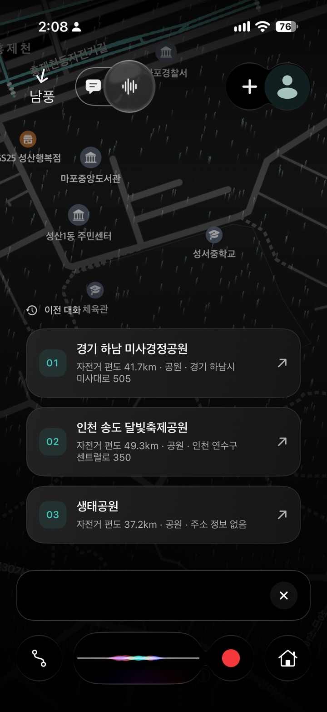
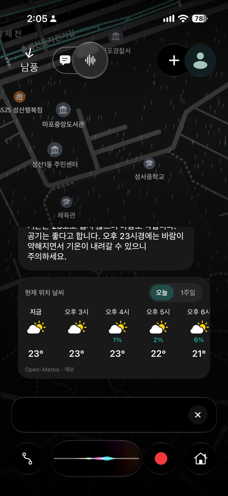
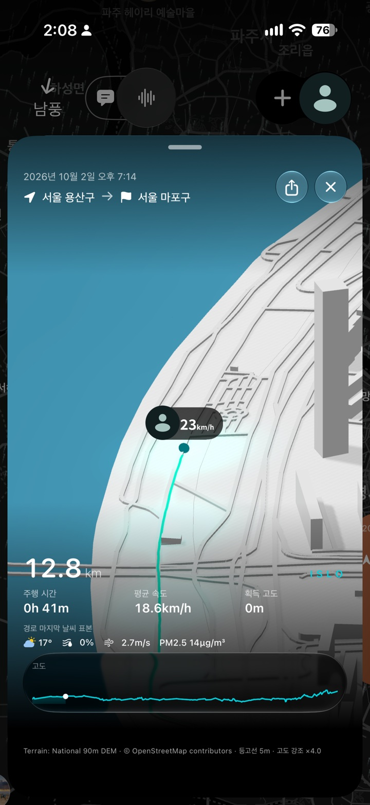

자전거를 위한 경로
목적지와 경유지를 설정하고 자전거 경로를 탐색하세요. 분기점의 방향 표시와 음성 안내가 다음 길을 알려줍니다.
개발 중 · 정식 출시 전
두 바퀴를 위한, 새로운 동행
새로운 길을 찾고, 날씨를 물어보고, 달린 길을 다시 즐기세요. Islo는 자전거를 타는 하루를 iPhone 안에서 연결합니다.
Islo 둘러보기한국의 자전거 라이딩을 위한 개발 중인 앱입니다.
아직 App Store에서 다운로드할 수 없습니다.

화면보다, 라이딩에 집중할 수 있도록.
경로 안내 / 음성 대화 / 주행 기록01 — 길 위의 발견
강변 자전거길부터 대표 업힐까지. 달리고 싶은 코스와 잠시 들르고 싶은 명소를 한 지도에서 찾아보세요.

명소, 바람, 그리고 다음 목적지.
목적지와 경유지를 설정하고 자전거 경로를 탐색하세요. 분기점의 방향 표시와 음성 안내가 다음 길을 알려줍니다.
국토종주, 대표 업힐, 섬 자전거길을 둘러보세요. 사진과 장소 소개를 통해 자전거로 찾아갈 명소도 발견할 수 있습니다.
출발 전에 지역별 지도와 경로 데이터를 다운로드해 두세요. 날씨 등 온라인 정보는 네트워크 연결이 필요합니다.
02 — 말로 시작하는 라이딩
말이나 텍스트로 코스를 찾고, 주변 장소와 라이딩 날씨를 물어보세요.
원하는 라이딩을 말해보세요. 온디바이스 AI가 요청을 이해하고 앱의 코스·장소 데이터와 연결합니다. 지원 여부는 기기와 언어에 따라 달라집니다.

기온과 바람, 비, 공기질을 확인하세요. 시간별·주간 예보를 보고 출발 시간을 생각해 볼 수 있습니다.

03 — 라이딩의 여운
경로와 속도, 시간, 경사도와 고도를 기록하세요. 지나온 길을 3D 디오라마로 다시 보고, 영상으로 내보내 저장하거나 공유할 수 있습니다.
주행 기록과 AI 대화 이력은 기기에 암호화해 저장하며, 앱에서 확인하고 삭제할 수 있습니다.

snowly가 만드는 라이딩 경험
Islo는 snowly에서 개발 중인 iPhone 자전거 앱입니다. 한국에서의 라이딩을 중심으로 경로 안내, 장소 탐색, 음성 대화, 주행 기록을 하나의 경험으로 만들고 있습니다.
프로젝트 문의GitHub 로그인이 필요합니다. 공개 문의에는 개인정보를 포함하지 마세요.
지도 자료: © OpenStreetMap contributors · 명소 사진: 한국관광공사 TourAPI